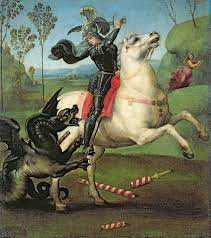
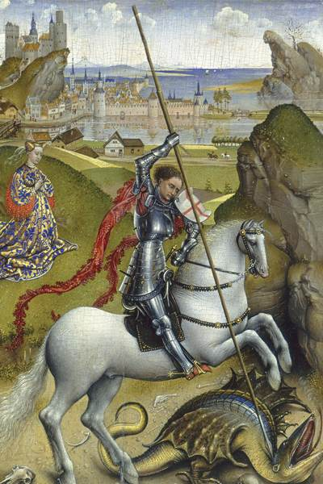
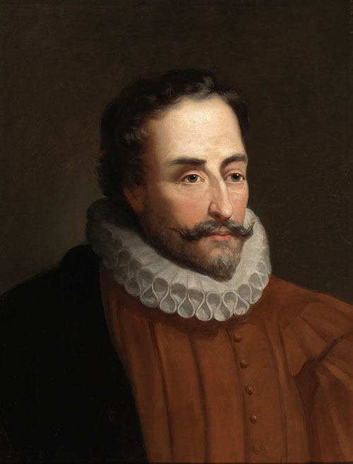
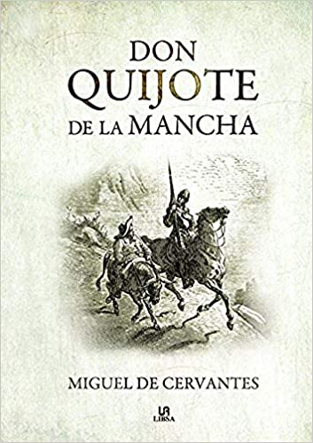
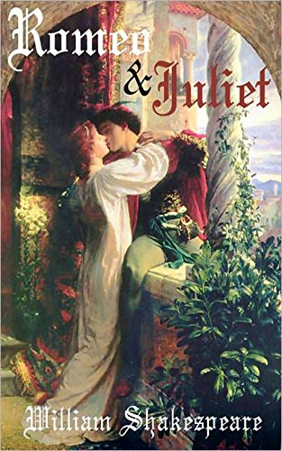

ORIGEN
La celebración del Día del Libro se remonta a principios del siglo XX. La historia del libro se hace
festiva
y surgen actividades literarias en toda España. Hoy, el día 23 de abril se celebra en todo el mundo, el Día
del Libro Internacional.
El Origen del Día del Libro se remonta a 1926. El 23 de abril de 1616 fallecían Cervantes, Shakespeare e
Inca
Garcilaso de la Vega. También en un 23 de abril nacieron – o murieron – otros escritores eminentes como
Maurice Druon, K. Laxness, Vladimir Nabokov, Josep Pla o Manuel Mejía Vallejo. Por este motivo, esta fecha
tan
simbólica para la literatura universal fue la escogida por la Conferencia General de la UNESCO para rendir
un
homenaje mundial al libro y sus autores, y alentar a todos, en particular a los más jóvenes, a descubrir el
placer de la lectura y respetar la irreemplazable contribución de los creadores al progreso social y
cultural.
La idea original de la celebración del Día del Libro partió de Cataluña, del escritor valenciano Vicente
Clavel Andrés, proponiéndola a la Cámara Oficial del Libro de Barcelona en 1923 y aprobada por el rey
Alfonso
XIII de España en 1926. El 7 de Octubre de 1926 fue el primer Día del Libro, poco después, en 1930, se
instaura definitivamente la fecha del 23 de abril como Día del Libro, donde este día coincide con Sant Jordi
-
San Jorge, patrón de Alemania, Aragón, Bulgaria, Cataluña, Etiopía, Georgia, Grecia, Inglaterra, Líbano,
Lituania, Países Bajos, Portugal, Eslovenia y México. Es tradicional regalar una rosa al concluir una
lectura,
evento o pregón y que los enamorados y personas queridas se intercambien una rosa y un libro.
CELEBRACIÓN MUNDIAL Y LUGARES DE INTERÉS
En 1995 el Día del Libro se convierte en una FIESTA MUNDIAL. El Día del Libro fue propuesto por la Unión
Internacional de Editores (UTE), y presentada por el gobierno español a la Organización de las Naciones Unidas
para la Educación, la Ciencia y la Cultura (UNESCO). En 1995, se aprobó proclamar el 23 de abril de cada año
el
"Día Mundial del Libro y del Derecho de Autor".

Si deseas sentir la tradición de la Fiesta del Día del Libro, iniciada en 1926, puedes iniciar tu paseo por
la Rambla de Catalunya de Barcelona, miles de comercial-paradas de libreros y floristas envuelven la ciudad
de
cultura a través de los libros, puedes demostrar y sentir el amor de personas queridas cuando recibes o
regalas una rosa, también se reúnen las asociaciones, instituciones, bibliotecas, escritores de todo el
mundo
firmando sus obras, ilustradores, medios de comunicación,... te acompañan por las calles de la ciudad.

Existen miles de lugares de interés en más de 100 países para celebrar el Día Internacional del Libro y los
Derechos de Autor. Por ejemplo, en Madrid realizan más de 600 actos el 23 de abril, preámbulo de la Feria
del
Libro con 15 días de duración. Ciudad de México, Caracas, Bogotá, Santiago, Valencia, La Victoria, Buenos
Aires, Maracaibo, Barquisimeto, Quito, Managua, Maracay, New York, Los Ángeles, Medellín, Ciudad de
Guatemala,
Valparaiso, muchas ciudades Europeas, Americanas, Asiáticas, Africanas, incluso en Vietnam se celebra a
escala
nacional..., celébralo en miles de localidades más de todo el mundo, encontrarás actos del Día del Libro
para
disfrutar de la fiesta mundial. ¡Infórmate en tu localidad!
LA LEYENDA DE SANT JORDI Y LA TRADICIÓN DE LAS ROSAS

Según la leyenda de Sant Jordi, la villa de Montblanc estaba siendo aterrorizada por un colosal Dragón.
La bestia se había instalado a las afueras del pueblo, infectando el aire y el agua con su aliento apestoso
y
causando estragos entre el ganado. En su búsqueda de alimento, cada vez se aproximaba más a las murallas,
por
lo que los vecinos tuvieron que buscar una forma de mantenerlo apartado.
Empezaron dándole de comer ovejas; cuando éstas se acabaron, siguieron con los bueyes, y luego con los
caballos. Y por fin no tuvieron más remedio que sacrificar a los propios habitantes...
Se metieron los nombres de todos en un puchero, también el del Rey, y el de su hija la Princesa, y cada día
una mano inocente decidía quien moriría la mañana siguiente.
Y una tarde la escogida para ser entregada al Dragón fue la princesa que se llamaba Cleodolinda. Cuenta la
leyenda que el Rey lloró y suplicó a sus súbditos por la vida de su hija, pero que de nada le sirvió, ya que
no era el único padre desconsolado. Cuentan otros que el Rey entregó a su hija al Dragón con valentía y
entereza. Sea como fuere, la joven salió de las murallas y se dirigió hacia su triste destino.
Cuando el terrible Dragón avanzaba hacia la princesa y ya todo parecía perdido, surgió entre la bruma un
apuesto Caballero de reluciente armadura, sobre un caballo blanco que arremetió contra la bestia. El animal,
herido, se sometió al caballero, que le ató al cuello un extremo del cinturón de la princesa.
La dama tomó el otro extremo del cinturón y, para pasmo de los pobladores de Montblanc, condujo al Dragón
como a un perrito hasta la puerta de la ciudad. Allí, a la vista de todos, el caballero remató a la bestia
de
un certero golpe de lanza.

Jordi, que es como se llamaba el caballero, obsequió a la Princesa con una de esas rosas.
Semejante gesta hizo que el santo caballero alcanzase fama y popularidad durante la Edad media, y que fuera
escogido patrón de la caballería y la nobleza.
La leyenda de Sant Jordi dice que los hombres han de regalar una rosa a las mujeres y éstas, un libro a
aquellos.
Si bien ya no siempre se cumplen esos roles, lo cierto es que todos los 23 de abril, en toda Catalunya se
festeja el día de los libros y las rosas.
MIGUEL DE CERVANTES
Miguel de Cervantes (1547-1616) fue un destacado escritor español considerado uno de los más importantes de
la literatura mundial. Nació en Alcalá de Henares, España, y su obra cumbre es la novela "Don Quijote de la
Mancha", publicada en 1605. Cervantes vivió una vida marcada por la adversidad, experimentando períodos de
prisión y dificultades económicas. Es considerado el padre de la novela moderna y su obra maestra, "Don
Quijote de la Mancha", es una sátira ingeniosa que parodia los ideales caballerescos y cuestiona la realidad
y
la locura. Cervantes también escribió una gran cantidad de poesía, teatro y otras novelas, aunque su obra
más
conocida es sin duda "Don Quijote". Su estilo literario es considerado innovador, realista y lleno de humor.
La figura de Miguel de Cervantes sigue siendo reverenciada en la actualidad como uno de los más grandes
escritores de habla hispana y su legado literario perdura en la historia de la literatura mundial.


WILLIAM SHAKESPEARE
William Shakespeare (1564-1616) fue un renombrado dramaturgo, poeta y actor inglés, considerado uno de los
más grandes escritores de la literatura mundial. Nacido en Stratford-upon-Avon, Inglaterra, es conocido por
su
vasta obra literaria, que incluye 39 obras de teatro y más de 150 sonetos. Sus obras, como "Romeo y
Julieta",
"Macbeth", "Hamlet" y "Otelo", son consideradas clásicos de la literatura universal y han sido traducidas a
numerosos idiomas. Shakespeare es conocido por su habilidad en la creación de personajes complejos, su uso
innovador del lenguaje y su profundo entendimiento de la naturaleza humana. Sin embargo, gran parte de su
vida
y biografía sigue siendo objeto de especulación y misterio. Aunque vivió hace más de 400 años, su legado
literario perdura en la actualidad, siendo estudiado, representado y apreciado en todo el mundo como uno de
los más grandes escritores de la historia.
